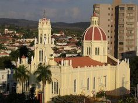

Praça da Matriz
A Praça Matriz de Espírito Santo do Pinhal é o coração histórico da cidade, com belos jardins e uma igreja centenária, oferecendo um ambiente charmoso para os moradores e visitantes desfrutarem de momentos de tranquilidade e contemplação.

Teatro Municipal
O Teatro Municipal de Espírito Santo do Pinhal é um elegante ícone cultural da cidade, conhecido por sediar eventos teatrais, musicais e artísticos, enriquecendo a vida cultural da comunidade.
Vinícola Guaspari
A Vinícola Guaspari, em Espírito Santo do Pinhal, destaca-se pela produção de vinhos premiados, aproveitando o clima e solo propícios da região para criar vinhos de alta qualidade.